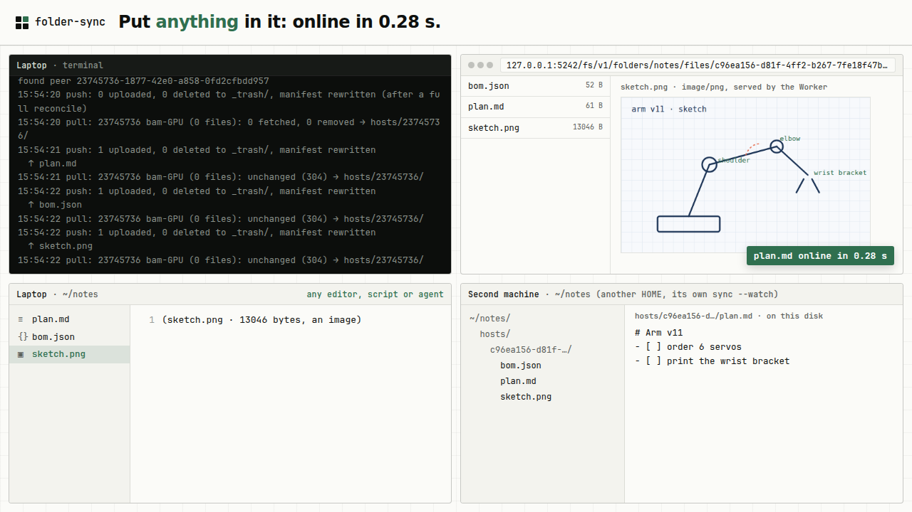
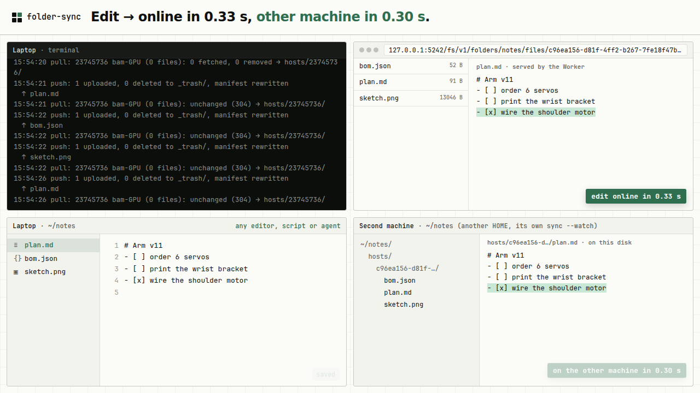
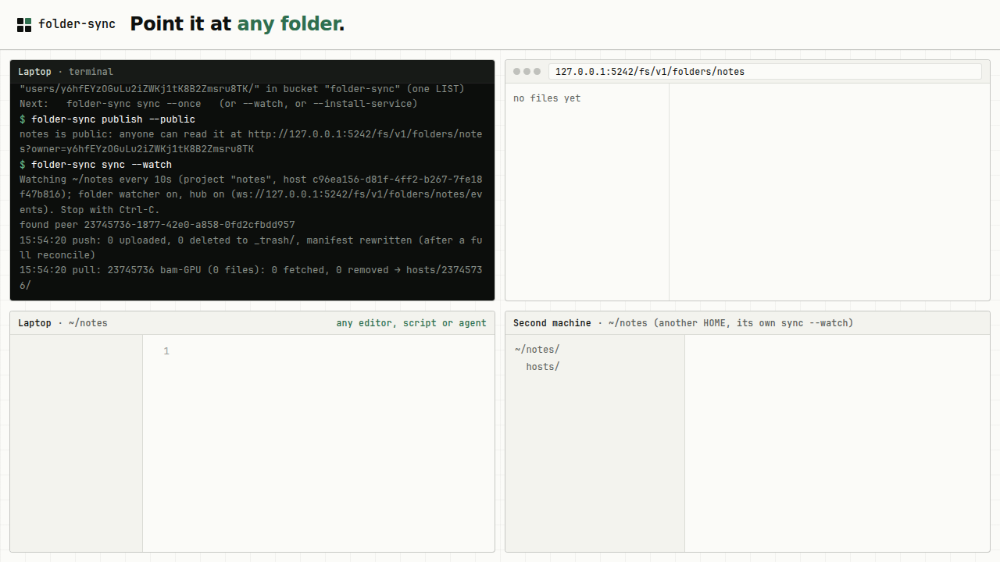
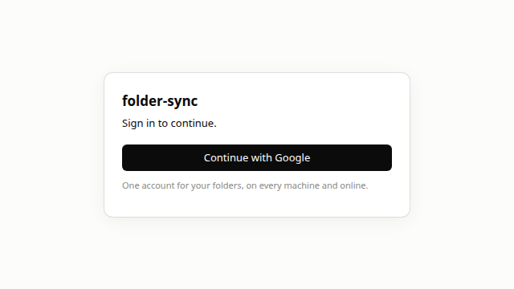

Your folder, on every computer and online.
Obsidian Sync for any application.
File-first, agent-friendly. Pick any folder of plain files and folder-sync keeps it the same on your laptop, your desktop and the web. Any editor, script or local AI agent can just open the files.
A plain folder on your disk, a copy that's always online, sync in between.
Your files stay files
Edit them with anything. Nothing has to go through an app.
Only what changed moves
A watcher sees each save, uploads the changed files and tells your other machines at once.
Always-on copy, readable on the web
Your other computers pull it down; apps and the browser read the same files.






init, publish --public, sync --watch. Folder watcher on, hub on.

The folder is the database.
Local agents just work
An AI agent on your machine reads and writes plain files with the tools it already has. No API, no SDK, no export step. It edits; the folder syncs.
No lock-in, no lost work
The files on your disk are the truth. An overwrite or delete keeps the old copy online in _trash/, and an empty or unmounted folder can't wipe the online one.
One backend for every app
An app keeps its data in a folder and gets sync, an online copy and accounts for free. One sign-in works across every app that uses it.
What works now, and what's coming.
- Sync any folder across your computersLinux and macOS; each machine's files land on the others under
hosts/<machine>/ - Push, not pollinga save goes up at once; signed-in machines and pages hear about it in a fraction of a second
- An online copy you can read on the webprivate by default;
publish --publicwhen you choose - Sign in from the browsera new machine shows a code you approve; it holds short-lived keys for your own files only, and you can revoke it
- Runs in the background
sync --install-servicewrites the systemd, launchd or Task Scheduler entry - Ignore rulesgitignore syntax
- A desktop tray appLinux, built from source for now (
app/) - Version historyold copies of replaced and deleted files, kept up to 30 days and thinned as they age; see what changed, download one, restore it
- Activity logwhich machine changed what, and when, with each sync's time from disk to online and back
- Deleted filesevery deleted file with a kept copy; restore one or many at once
- The sync viewone
<folder-sync-status>element any app drops in: the folder's state, its activity, versions and deleted files folder-sync servethe same view on your own machine, on 127.0.0.1 behind a token; status and activity work offline
- Windowsthe binary cross-compiles; it has not been run on Windows yet
Push, not polling: a save shows up in about a third of a second.
Each machine tells a small per-folder hub "this changed", so nothing waits for a timer. These numbers are illustrative: they are measured on one machine over loopback, so the internet's round trips are not in them.
Main at d603c9f, local stack (wrangler dev, a local D1, rclone serve s3 behind the R2 stand-in), the latency bench driving the CLI as a person does: init, then sync --watch. Clocks start just before the write and stop when the reader holds the same bytes.
| Push vs polling (mean of 10) | Polling | Push | Faster |
|---|---|---|---|
| Web page write → your laptop | 1.01 s | 0.28 s | 3.6× |
| Laptop → your other computer | 2.80 s | 0.63 s | 4.5× |
| Laptop → an open browser page | 6.20 s | 0.75 s | 8.2× |
| A new computer joins → laptop has its file | 144 s | 0.16 s | 880× |
| Idle machine, per minute | 3.3% CPU | 0.1% CPU | 33× |
Measured 2026-10-26 on a local stack, 2 machines and a browser page, 10 trials each way at random phases; "polling" is the same build with push off (2 s rounds, the page re-reading every 10 s). That push code merged to main on 2026-10-28 (99560d9). Source: PEP 0005 §4b.
Download one file, then point it at a folder.
1 · Download the CLI
One static binary, v0.2.0 (a pre-release). It fetches its pinned rclone on first init and checks its SHA-256.
$ mkdir -p ~/.folder-sync/bin; curl -fsSL https://github.com/zacharyyamaoka/folder-sync/releases/download/v0.2.0/folder-sync-linux-amd64 -o ~/.folder-sync/bin/folder-sync; chmod +x ~/.folder-sync/bin/folder-sync
Then put ~/.folder-sync/bin on your PATH. Check it: SHA256SUMS. The macOS builds are not signed.
Or build from source
$ git clone https://github.com/zacharyyamaoka/folder-sync $ go -C folder-sync build -o ~/.folder-sync/bin/folder-sync ./cmd/folder-sync
2 · Bring your own bucket
folder-sync stores the online copy in a Cloudflare R2 bucket. Use your own: it's on your Cloudflare account, so you pay R2's prices (it has a free tier) and nobody else can see it.
- Cloudflare dashboard → R2 → Create bucket, say
folder-sync. Leave public access off. - R2 → Manage API tokens → Create API token: Object Read & Write, for that bucket only. Copy the account id, the access key id and the secret.
- Store the key on each machine (asked for once, kept in
~/.folder-sync/credentials.json, mode 0600):
$ folder-sync login --key # then, in the folder you want synced: $ folder-sync init --project notes --bucket folder-sync $ folder-sync sync --watch # the same two lines on your other computer, in its own folder
With your own bucket a save uploads at once and your other computers pull every 10 s (push between machines needs an account). folder-sync publish --viewer writes a read-only web viewer (R2-Explorer, behind Cloudflare Access) for you to deploy. Cloud agents can set FOLDER_SYNC_ACCOUNT_ID, FOLDER_SYNC_ACCESS_KEY_ID and FOLDER_SYNC_SECRET_ACCESS_KEY instead of login --key.
folder-sync login on each computer: it prints a code you approve in the browser. Then open the live demo: your folders online, each computer's files, and recent activity with each sync's time.